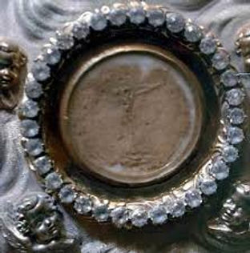
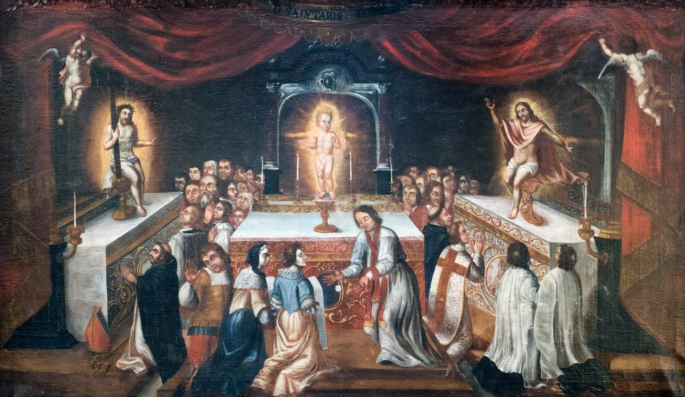
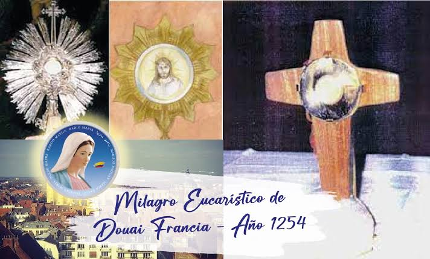

The 1254 Eucharistic Miracle of Douai occurred on Easter Sunday at the Church of St. Amé in Douai, France. When a priest accidentally dropped a consecrated Host, it levitated, and parishioners witnessed the Host transform to reveal the face of Christ crowned with thorns, accompanied by drops of blood.
During Easter Mass in 1254, a priest accidentally dropped a consecrated Host to the floor. Before the priest could pick it up, the Host miraculously levitated into the air and rested on a linen purificator. Shortly after, the faithful and clergy gathered witnessed the Host transform to reveal the face of Christ crowned with thorns, with visible drops of blood on his forehead.
The miracle was documented by an eyewitness, Father Thomas de Cantimpré, a Dominican theologian and bishop. The Sacred Host has survived centuries of conflict, including the French Revolution, where a priest hid the relic to keep it safe.
The miraculously preserved Host remains an object of veneration. You can learn more about its history, location, and witness accounts through the Eucharistic Miracles Project archives.